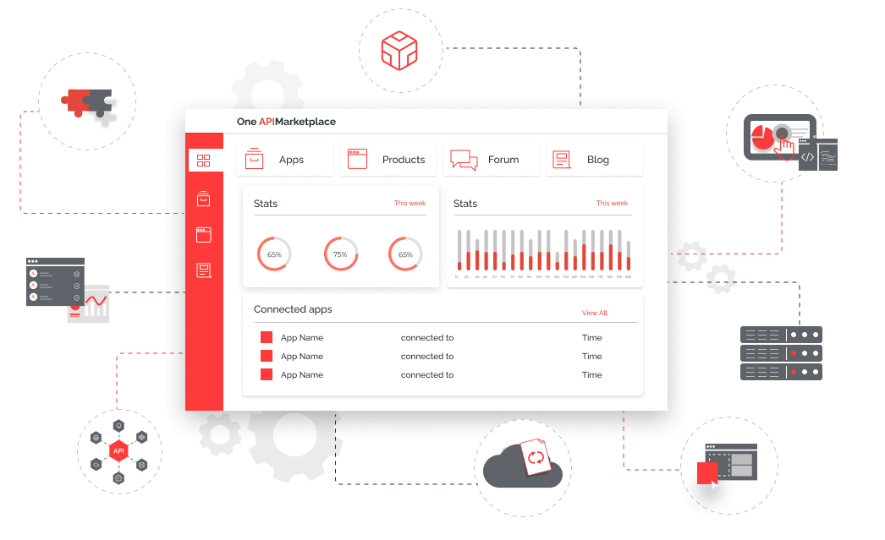

Working at Digital API Craft
- Developed and maintained web applications using HTML, CSS, and JavaScript, employing my proficiency in front-end technologies to create intuitive and visually appealing user interfaces.
- Implemented RESTful APIs using frameworks like Express.js and Node.js, facilitating seamless communication and integration between different components of the software system.
- Utilized Git for version control and collaborated with a team of developers to ensure efficient code management and streamlined collaboration.
- Conducted thorough code reviews, providing constructive feedback and suggestions to peers to enhance code quality, maintainability, and adherence to best practices.
- Collaborated closely with the quality assurance team, identifying and resolving software defects to ensure a smooth and bug-free user experience.
- Employed Agile methodologies, such as Scrum, to manage project tasks, prioritize deliverables, and ensure timely software development cycles.
- Demonstrated proficiency in database management, utilizing technologies like SQL and MongoDB to design, implement, and maintain efficient data storage solutions.
- Actively stayed updated with emerging technologies and industry trends, continuously expanding my skillset and adapting to new tools and frameworks to enhance development efficiency and stay at the forefront of innovation.